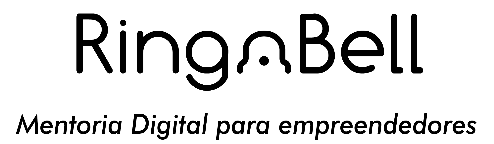

Post #1
• Sólidos conhecimentos financeiros, análise de DRE e balanços, desenvolvimento de metodologias redução de custos através de negociações estratégicas;
• Experiência nas áreas de suprimentos, aquisições de produtos e serviços, e desenvolvimento e gestão de equipes;
• Graduado em Administração de Empresas (Fumec), pós-graduação em Logística Empresarial (FGV), pós-graduação em Gestão Financeira (FDC). Inglês avançado;
• Atuei como Diretor de Suprimentos e Logística, gerindo todos os ativos da companhia, estabelecendo parcerias
estratégicas entre empresas, intermediado negociações com fornecedores e instituições financeiras;
• Durante toda minha carreira, desenvolvi e formei as pessoas proporcionando ambientes de extrema confiança,
gerando alta produtividade com resultados de qualidades incontestáveis;
• Altíssima habilidade com recursos tecnológicos, apaixonado pela inovação, inteligência emocional de referência;
• Nível avançado no pacote de ferramentas de rotina (Office);
• Estudante de Análise e Desenvolvimento de Sistemas, buscando evoluir em direção à solução de Problemas Digitais,
uma vez que a área de TI se torna cada vez mais estratégica;